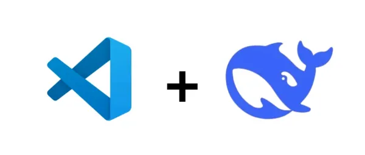
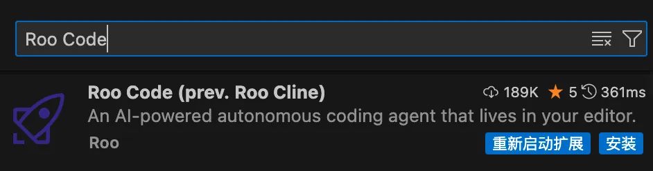
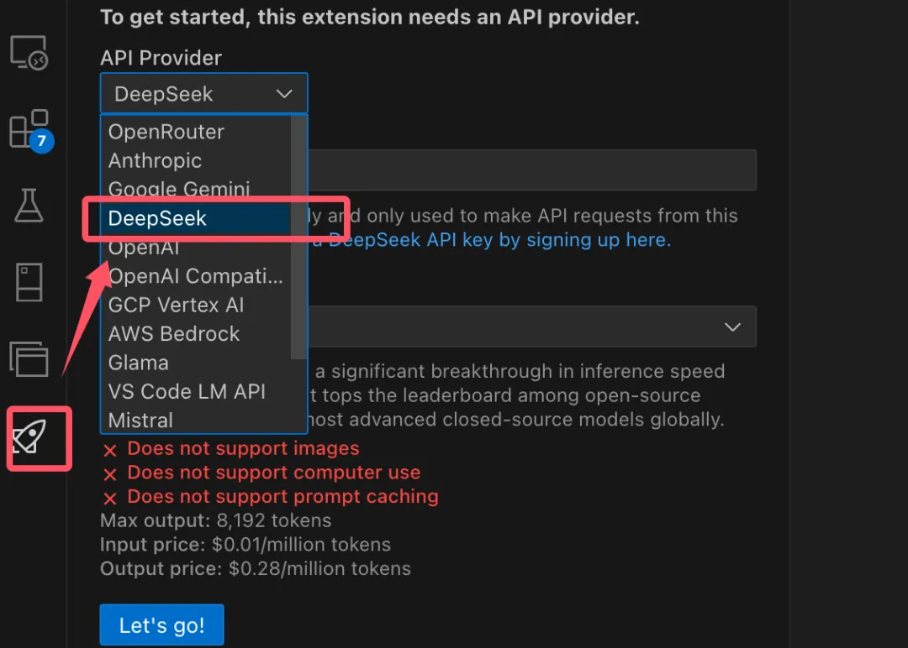
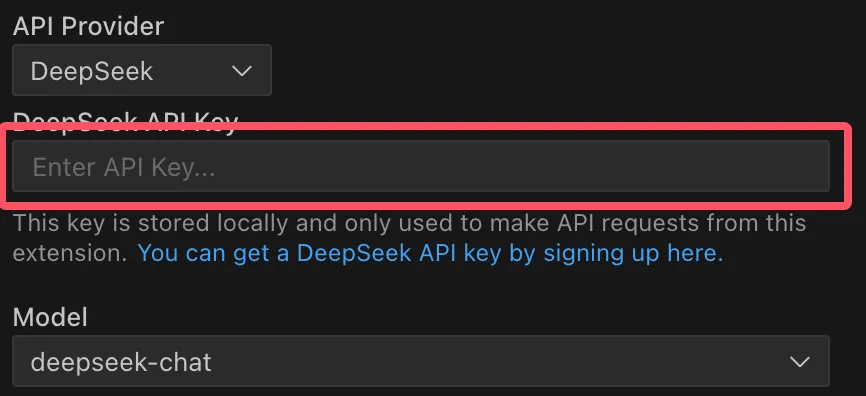
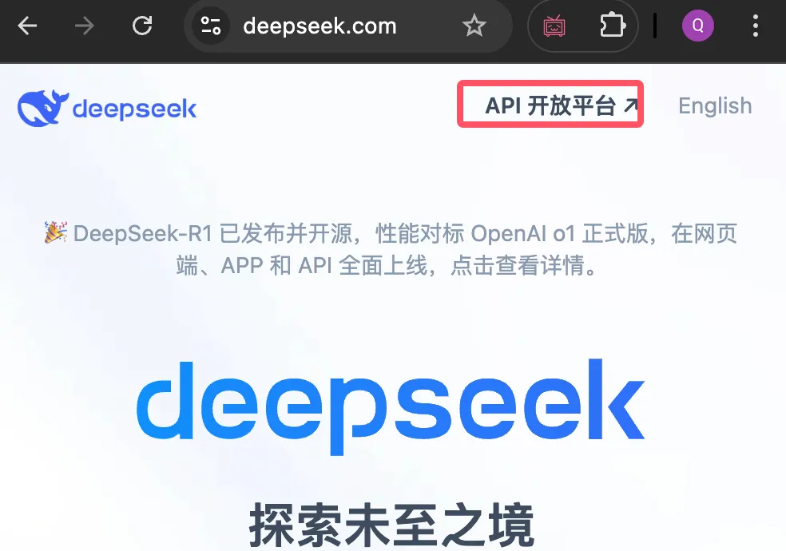
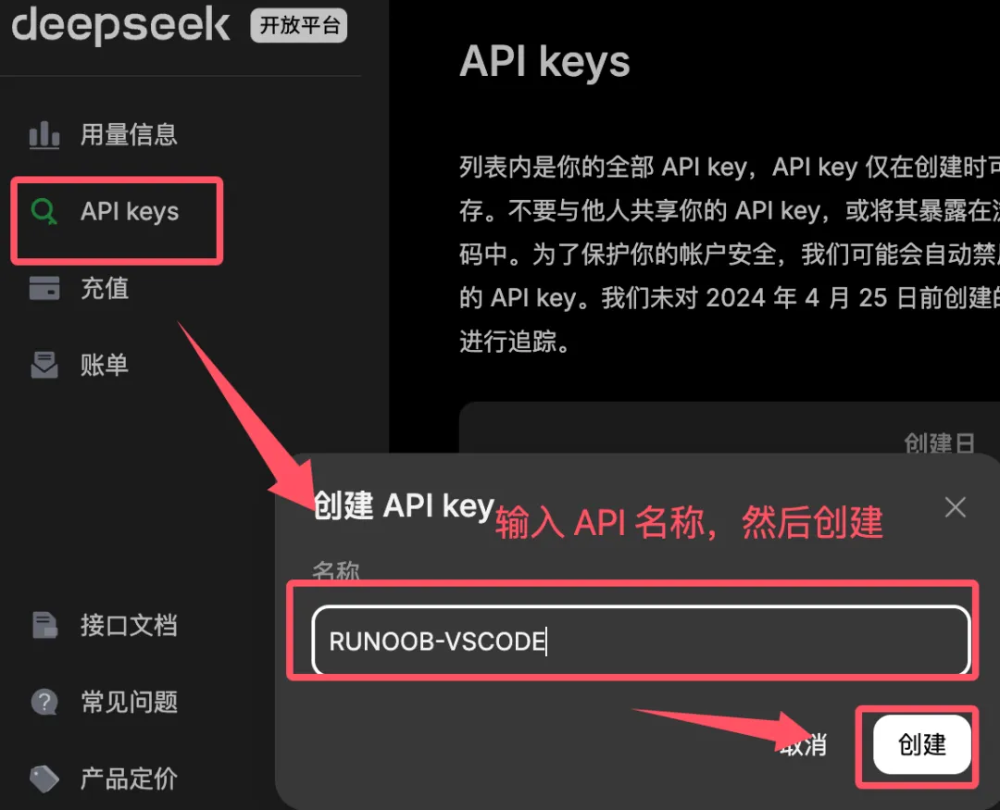
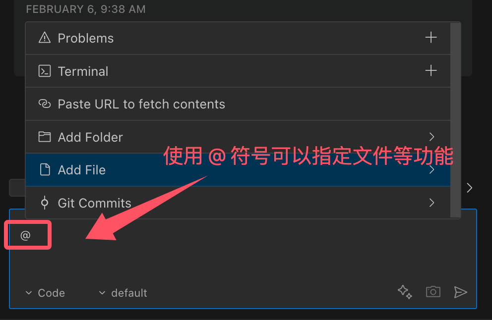

Integración de VSCode con DeepSeek
VSCode cuenta con un vasto mercado de extensiones, donde los usuarios pueden instalar diversas extensiones según sus necesidades para mejorar las funciones del editor, incluyendo soporte de idiomas, herramientas de formato de código, integración de control de versiones, temas e iconos, entre otros.
VS Code puede integrarse bien con el modelo de IA que queramos mediante extensiones. Las extensiones más comunes son:Extensión de IA de VS Code。
A continuación, aprendamos cómo instalar DeepSeek, que está muy de moda últimamente, en VS Code mediante la extensión Roo Code.

Este artículo utiliza Roo Code como ejemplo para demostrar cómo integrar DeepSeek.
Además de la interfaz API oficial, también podemos utilizarCoding Plan/Token Planplanes que se integran directamente con modelos de IA principales como DeepSeek, Kimi, GLM, Doubao, MiniMax, sin necesidad de comprar cada API por separado.
Instalar la extensión Roo Code
Roo Code (anteriormente Roo Cline) es un plugin de asistente de programación con IA basado en VS Code que ofrece a los desarrolladores una experiencia de programación eficiente e inteligente mediante la integración de múltiples modelos de IA y potentes funciones de automatización.
Roo Code se integra sin problemas con APIs populares como OpenAI, DeepSeek, Anthropic, Google Gemini, y también admite el uso de modelos locales a través de Ollama, permitiendo a los desarrolladores cambiar flexiblemente según sus necesidades y presupuesto.
Roo Code ofrece varios modos preestablecidos, incluidos Code (modo código), Architect (modo arquitectura) y Ask (modo preguntas), y admite personalización por parte del usuario. Por ejemplo, los usuarios pueden crear un rol de ingeniero QA centrado en escribir casos de prueba.
Ampliar palabras clave de búsqueda:Roo Code

Dirección de enlace del plugin:https://marketplace.visualstudio.com/items?itemName=RooVeterinaryInc.roo-cline
Dirección de Github:https://github.com/RooVetGit/Roo-Code
Configurar API Key
Después de instalar la extensión, aparecerá un icono de cohete en la barra de actividades de la izquierda. Al abrirlo, podemos ver los modelos de IA compatibles y seleccionar DeepSeek:

Complete la API Key que hayamos solicitado:

Podemos obtenerla en la plataforma abierta de API del sitio web oficial de DeepSeek:https://platform.deepseek.com/usageSolicitar API Key:


Después de una instalación exitosa, podemos hacer clic en el signo más en la esquina superior derecha de la extensión:+, abre la ventana de conversación:

También podemos seleccionar un fragmento de código del archivo y dejar que el modelo de IA nos ayude a analizarlo o corregirlo:

Usar@El símbolo proporciona contexto a la IA. Introduzca@para ver una lista de todos los archivos y símbolos de código de la carpeta.

Otras extensiones